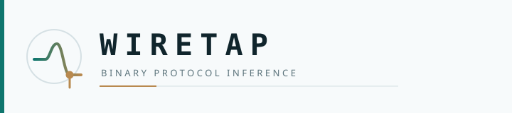

Brand
Clean instrumentation aesthetic: signal trace + tap probe — maintained by @theworker02. Not purple-glow AI chrome.



Colors
| Token | Hex | Role |
|---|---|---|
--wt-bg | #0e1518 | Page background |
--wt-ink | #1a3a4a | Deep teal |
--wt-teal | #2f6f7e | Mid signal |
--wt-gold | #c4a35a | Accent / tap |
--wt-fg | #e8eef0 | Primary text |
--wt-fg-muted | #8aa0a8 | Secondary text |
ASCII
__ ___ ____ _____ _____ _ ____
\ \ / (_| _ \| ____|_ _|/ \ | _ \
\ \ /\ / /| | |_) | _| | | / _ \ | |_) |
\ V V / | | _ <| |___ | |/ ___ \| __/
\_/\_/ |_|_| \_\_____| |_/_/ \_\_|
evidence-backed protocol inference
Canonical docs: repository docs/brand.md. Source SVGs: assets/ (mirrored here for Pages).